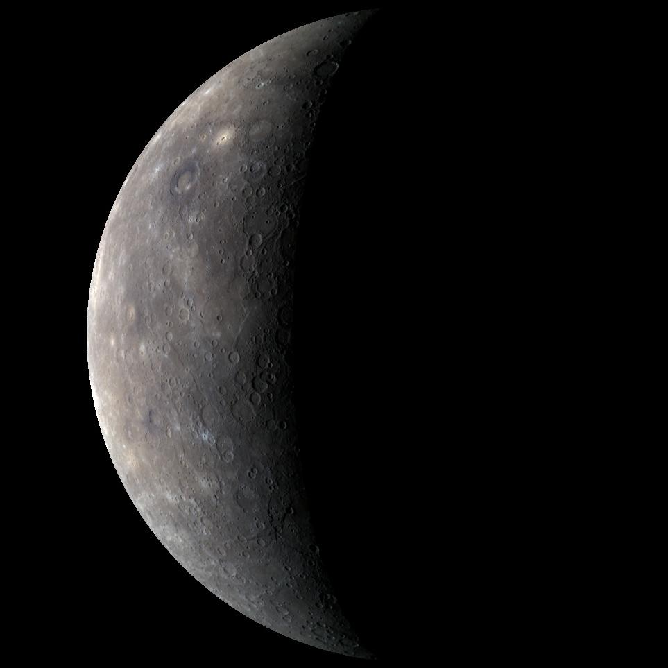
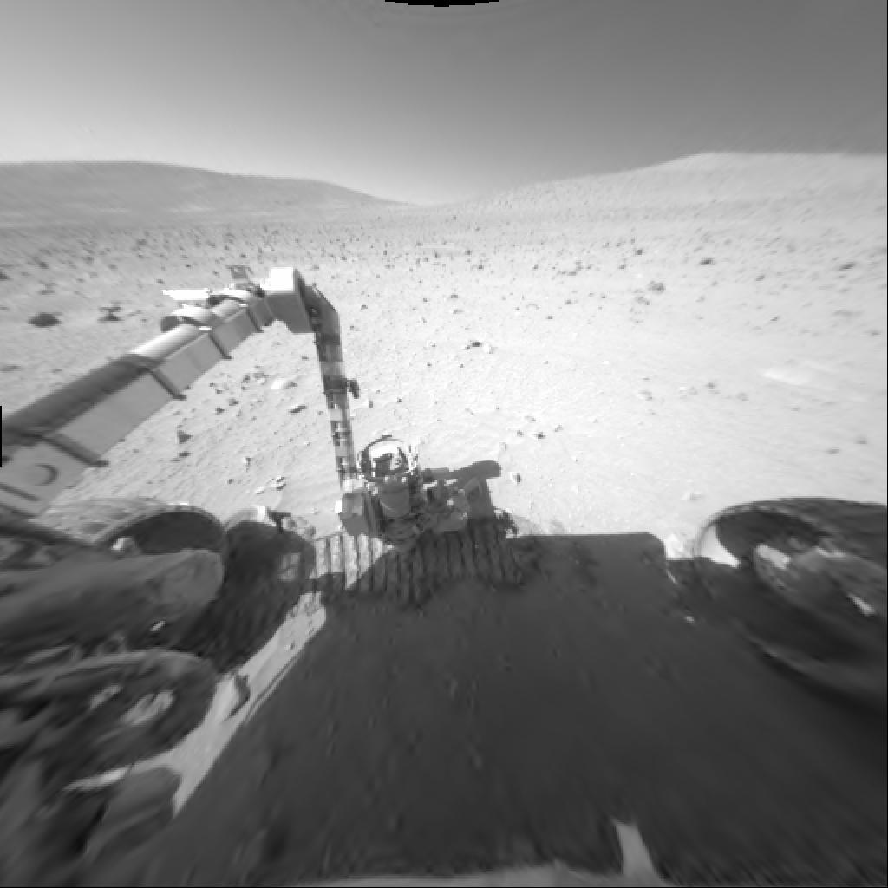
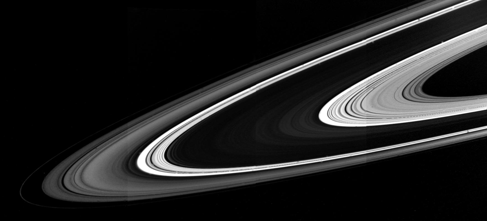
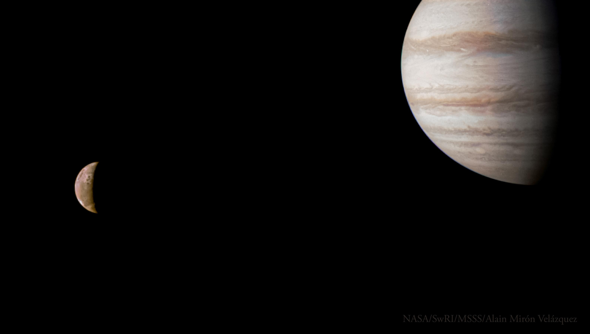
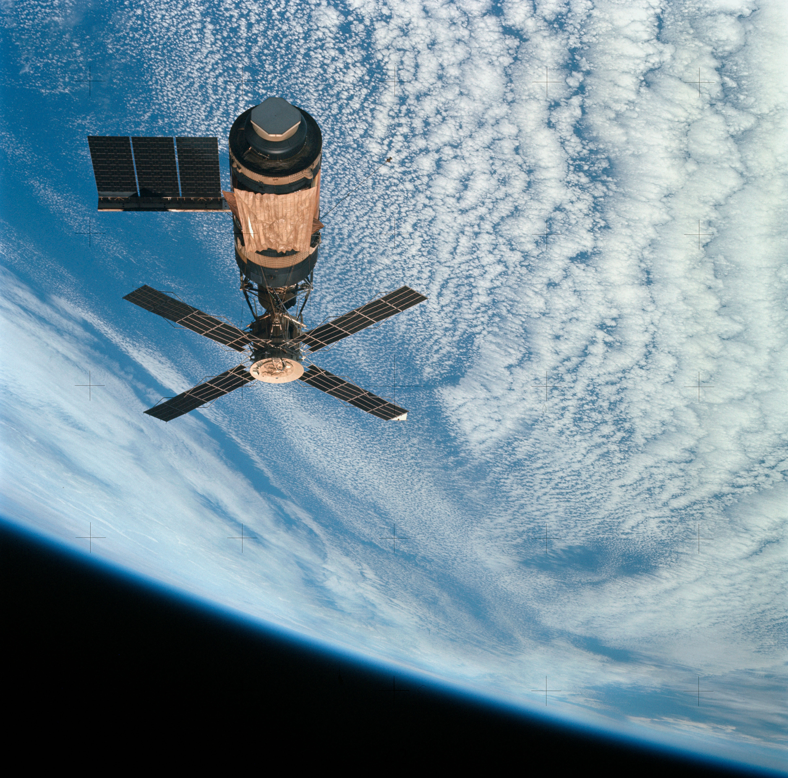
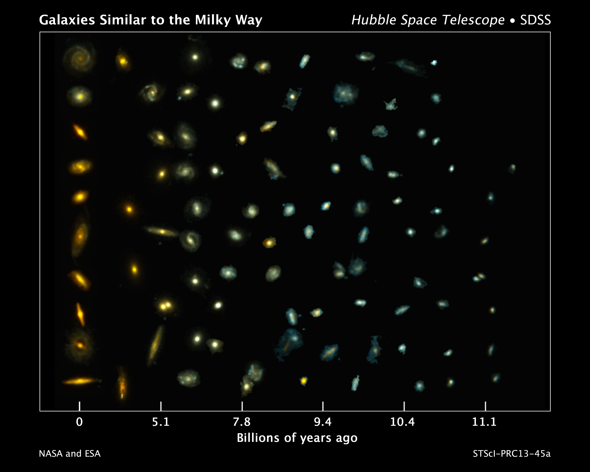

Arxiu d'imatges de la NASA
Alguns exemples
A la galeria hi ha imatges de planetes, missions espacials i galàxies. Pots seleccionar una fotografia per consultar-ne la fitxa original.






Imatges: NASA Image and Video Library. Crèdits individuals a les fitxes de cada imatge.